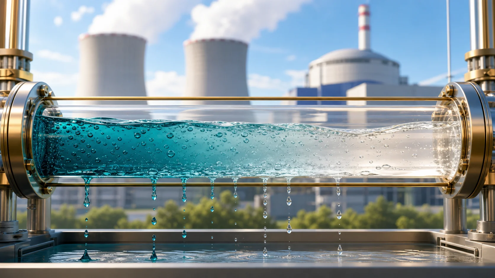
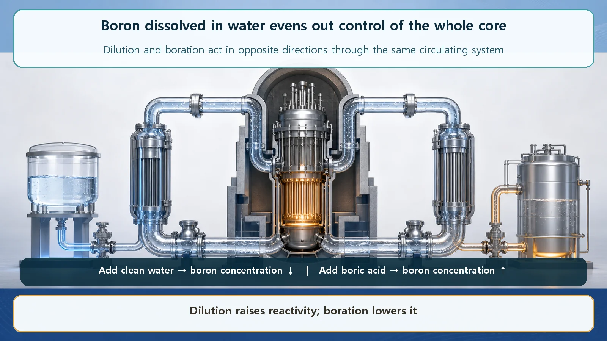
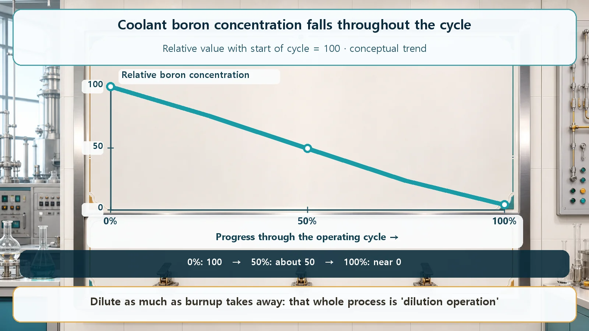

Long-Term Core Behavior & Fuel Cycle · 160
Brake Hard at First, Then Ease Off — Boron Dilution Operation, Taming the Core by Thinning the Boron
Like braking down a long hill: hard on the steep start, easing off as the slope flattens. The boron concentration falls from high at the start of the cycle to near zero at the end.

In a pressurized water reactor, boron dissolved in the coolant acts as a brake on the whole core. The concentration starts high to hold down fresh fuel's excess reactivity and is lowered little by little, by adding clean water, as burnup uses that reactivity up. By the end of the cycle it is close to zero. That gradual thinning is boron dilution operation; fast changes and shutdown remain the control rods' job.
Imagine driving down a long hill. On the steep first stretch, the car keeps wanting to speed up if you leave it alone, so you press the brake fairly hard to hold the speed down. As you go on and the slope gradually eases, you no longer need to press as hard; you let up a little at a time to keep a steady speed. By the bottom, your foot is almost off the brake.
Running a reactor nonstop for months, or more than a year, is remarkably like that downhill drive. The "brake" is boron dissolved in water, and the process of easing it off bit by bit is what we'll talk about today: boron dilution operation.
Why does new fuel have power to spare?
First, why a brake at all?
When new fuel is loaded into a reactor, it holds enough fissile material to burn for a very long time. It's not just this week's share; all the fuel needed until the next refueling goes in up front. So a freshly loaded core can produce far more than it needs right now. That spare capacity is called excess reactivity. Reactivity, simply put, is a value that says whether the reactor's power tends to grow or shrink, and "excess" means there's more of it than needed.
Left alone, that excess would push power higher than needed. So the surplus has to be held down somehow, exactly like braking on the steep start of the hill when the car keeps wanting to go faster.
A brake dissolved in water: boron
Enter boron. Boron, specifically the isotope boron-10, is very good at catching and swallowing neutrons. For fission to continue, neutrons have to travel around and cause the next fission; when boron snatches them along the way, the reaction calms down by that much. Absorbing neutrons means holding reactivity down.
In a reactor, this boron is used as boric acid dissolved in the coolant, the water that circulates through the core, much as you'd dissolve salt in water. That way the boron spreads evenly into every corner of the core along with the water, so the brake acts on the whole core rather than one spot. And just by making the boron in the water stronger or weaker, the reactivity of the entire core can be raised or lowered smoothly.

Thinning it bit by bit through the cycle: that's dilution operation
Now for the heart of it. During operation the fuel keeps burning (this is called burnup). As it burns, fissile material decreases, and the excess reactivity naturally fades a little at a time, just as the slope eases the further down the hill you go.
What happens if you keep braking hard after the slope has eased? The car stops. A reactor is the same. If the excess reactivity has fallen but the boron stays just as concentrated, the holding-down force becomes too strong, the reactor can't stay critical, and power starts to die away. So, by exactly as much as burnup reduces reactivity, the boron concentration is lowered (diluted) a little: easing off the brake. Lowering the concentration this way is called dilution, and operation that repeats it throughout the cycle is dilution operation.
Lowering the concentration is simpler than you might think. Adding clean water with no boron (or very little) to the coolant, a bit at a time, thins the overall concentration, the same way pouring water into strong coffee weakens it. Boron can also be filtered out by purification equipment. When the concentration needs to go back up, more boric acid is added; this is called boration. These adjustments are handled by a dedicated system that fills and purifies the reactor water (in a pressurized water reactor, the chemical and volume control system, CVCS), slowly and carefully.
So the boron concentration starts high at the beginning of the cycle, steps down little by little as time passes, and is close to zero by the end of the cycle.

Dissolving boric acid in the coolant all the time like this is a characteristic of pressurized water reactors. Boiling water reactors don't keep boric acid in the coolant during normal operation; they adjust with control rods and the recirculation flow, and use boron mainly in an emergency shutdown system.
Why use boron when there are control rods?
You might wonder: reactors already have control rods to adjust reactivity, so why also dissolve boron in the water?
Put simply, they're good at different things. Control rods are inserted into or withdrawn from particular places in the core and excel at quickly adjusting the area nearby, ideal for changing power in an instant or shutting the reactor down fast. Boron, spread through all the water, adjusts the whole core at once but very slowly. That suits exactly this kind of long game: following and compensating an excess reactivity that falls gradually over months. Handling that long change with control rods alone would mean packing rods much more densely throughout the core, and power would then tend to shift to one side and be harder to keep even. Boron takes on that heavy, long job instead.
Boron isn't used without limit, either: making it too concentrated can affect how the coolant's temperature feeds back on reactivity (the moderator temperature coefficient).
Common points of confusion
"Dilution operation means boron only ever gets taken out, right?" The overall trend is downward, but not always. When power is reduced, for example, boric acid may temporarily be added to raise the concentration again. Over the whole cycle, though, the direction is toward lower concentration, hence the name.
"If the boron concentration is set just right, do we even need control rods?" No. Boron handles slow adjustment; changing power quickly or shutting the reactor down in an instant is still the control rods' job. The two aren't competitors; they're a team that splits the work. In an emergency, a large amount of boric acid can also be injected to make sure the reactor shuts down.
"Isn't boric acid a dangerous chemical?" Boric acid is a substance routinely handled in reactors to adjust reactivity, managed through designated systems. Boron is used not because it is dangerous but because of its useful ability to absorb neutrons.
Today's takeaways
- A freshly loaded core holds fuel for a long run, so its excess reactivity is large and the surplus must be held down.
- Boron dissolved in water (boric acid) spreads evenly through the whole core and absorbs neutrons, a "brake dissolved in water" whose concentration adjusts reactivity smoothly.
- Lowering the boron concentration little by little (dilution) by as much as burnup reduces reactivity keeps the reactor critical; that is dilution operation, starting high at the beginning of the cycle and falling to near zero by the end.
- Dilution is done by adding clean water; boric acid is added to raise the concentration again when needed.
- Boron handles slow, core-wide, long-term adjustment; control rods handle fast, local adjustment.
With a single knob, the boron concentration, a reactor steadily governs itself through a long cycle.